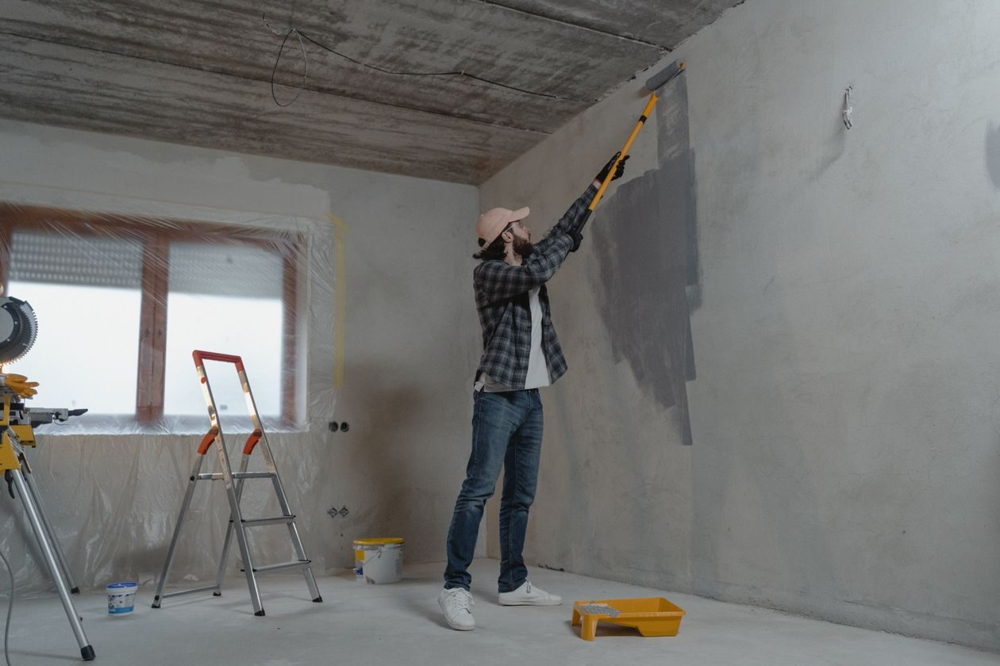

Services at Southern Handyman Services
General home repairs across the Jackson metro, from a service with 26 years of experience.
General home repairs
Home repairs inside and outside the house.
Irrigation install and repair
Irrigation systems installed and repaired.
Landscape drains
Regular and French landscape drains installed and repaired.
Landscape and low-voltage lighting
Landscape and low-voltage lighting installed and repaired.
Free project estimates
Free estimates on projects. Call to describe the job.
Gallery



All gallery photos are stock photos, labeled as such. They show the kind of work and setting described on this page, not this business.
Contact
Southern Handyman Services serves Jackson, MS. Questions? Call (601) 750-6437.